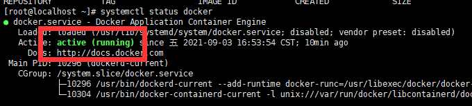

<!DOCTYPE html>


<html lang="zh-CN">
  

    <head>
      <meta charset="utf-8" />
        
      <meta
        name="viewport"
        content="width=device-width, initial-scale=1, maximum-scale=1"
      />
      <title>Windows安装Hyper-V并搭建docker+php+nginx+mysql |  时光荏苒</title>
  <meta name="generator" content="hexo-theme-ayer">
      
      <link rel="shortcut icon" href="/favicon.ico" />
       
<link rel="stylesheet" href="/dist/main.css">

      <link
        rel="stylesheet"
        href="https://cdn.jsdelivr.net/gh/Shen-Yu/cdn/css/remixicon.min.css"
      />
      
<link rel="stylesheet" href="/css/custom.css">
 
      <script src="https://cdn.jsdelivr.net/npm/pace-js@1.0.2/pace.min.js"></script>
       
 

      <link
        rel="stylesheet"
        href="https://cdn.jsdelivr.net/npm/@sweetalert2/theme-bulma@5.0.1/bulma.min.css"
      />
      <script src="https://cdn.jsdelivr.net/npm/sweetalert2@11.0.19/dist/sweetalert2.min.js"></script>

      <!-- mermaid -->
      
      <style>
        .swal2-styled.swal2-confirm {
          font-size: 1.6rem;
        }
      </style>
    <link rel="alternate" href="/atom.xml" title="时光荏苒" type="application/atom+xml">
</head>
  </html>
</html>


<body>
  <div id="app">
    
      
      <canvas width="1777" height="841"
        style="position: fixed; left: 0px; top: 0px; z-index: 99999; pointer-events: none;"></canvas>
      
    <main class="content on">
      <section class="outer">
  <article
  id="post-windows安装Hyper-V+ubuntu"
  class="article article-type-post"
  itemscope
  itemprop="blogPost"
  data-scroll-reveal
>
  <div class="article-inner">
    
    <header class="article-header">
       
<h1 class="article-title sea-center" style="border-left:0" itemprop="name">
  Windows安装Hyper-V并搭建docker+php+nginx+mysql
</h1>
 

      
    </header>
     
    <div class="article-meta">
      <a href="/2021/09/03/windows%E5%AE%89%E8%A3%85Hyper-V+ubuntu/" class="article-date">
  <time datetime="2021-09-03T02:48:04.000Z" itemprop="datePublished">2021-09-03</time>
</a> 
  <div class="article-category">
    <a class="article-category-link" href="/categories/%E6%8A%80%E6%9C%AF/">技术</a>
  </div>
  
<div class="word_count">
    <span class="post-time">
        <span class="post-meta-item-icon">
            <i class="ri-quill-pen-line"></i>
            <span class="post-meta-item-text"> 字数统计:</span>
            <span class="post-count">1.1k</span>
        </span>
    </span>

    <span class="post-time">
        &nbsp; | &nbsp;
        <span class="post-meta-item-icon">
            <i class="ri-book-open-line"></i>
            <span class="post-meta-item-text"> 阅读时长≈</span>
            <span class="post-count">5 分钟</span>
        </span>
    </span>
</div>
 
    </div>
      
    <div class="tocbot"></div>


  
    <div class="article-entry" itemprop="articleBody">
       
  <h2 id="Windows10家庭版安装ubuntu"><a href="#Windows10家庭版安装ubuntu" class="headerlink" title="Windows10家庭版安装ubuntu"></a>Windows10家庭版安装ubuntu</h2><h3 id="安装Hyper-V"><a href="#安装Hyper-V" class="headerlink" title="安装Hyper-V"></a>安装Hyper-V</h3><p><a target="_blank" rel="noopener" href="https://blog.csdn.net/yuyuking/article/details/103890195">参考博文</a><br>把下面代码保存为.bat文件，用管理员运行，重启之后，就可以在win+S 中搜索到Hyper-V</p>
<figure class="highlight plaintext"><table><tr><td class="gutter"><pre><span class="line">1</span><br><span class="line">2</span><br><span class="line">3</span><br><span class="line">4</span><br><span class="line">5</span><br><span class="line">6</span><br><span class="line">7</span><br><span class="line">8</span><br><span class="line">9</span><br></pre></td><td class="code"><pre><span class="line">pushd &quot;%~dp0&quot;</span><br><span class="line"></span><br><span class="line">dir /b %SystemRoot%\servicing\Packages\*Hyper-V*.mum &gt;hyper-v.txt</span><br><span class="line"></span><br><span class="line">for /f %%i in (&#x27;findstr /i . hyper-v.txt 2^&gt;nul&#x27;) do dism /online /norestart /add-package:&quot;%SystemRoot%\servicing\Packages\%%i&quot;</span><br><span class="line"></span><br><span class="line">del hyper-v.txt</span><br><span class="line"></span><br><span class="line">Dism /online /enable-feature /featurename:Microsoft-Hyper-V-All /LimitAccess /ALL</span><br></pre></td></tr></table></figure>

<h3 id="安装Ubuntu"><a href="#安装Ubuntu" class="headerlink" title="安装Ubuntu"></a>安装Ubuntu</h3><p><a target="_blank" rel="noopener" href="https://zhuanlan.zhihu.com/p/128640396">参考博文</a><br>基本就是按照操作一步一步点下来。<br>MSDN好像没有ubuntu的镜像了，可以点击<a target="_blank" rel="noopener" href="http://mirrors.163.com/ubuntu-releases">网易开源镜像站</a>下载<br>启动之后，会遇到这样的问题，</p>
<figure class="highlight plaintext"><table><tr><td class="gutter"><pre><span class="line">1</span><br><span class="line">2</span><br><span class="line">3</span><br><span class="line">4</span><br><span class="line">5</span><br><span class="line">6</span><br><span class="line">7</span><br><span class="line">8</span><br><span class="line">9</span><br><span class="line">10</span><br><span class="line">11</span><br></pre></td><td class="code"><pre><span class="line">Hyper-V™</span><br><span class="line">Uirtual Machine Boot Su_ary</span><br><span class="line"></span><br><span class="line">1.SCSI Disk (0,0)No UEFI-compatible file system uas found.</span><br><span class="line"></span><br><span class="line">2.Network Adapter (OO155DO6E40O) DHCP failed.</span><br><span class="line"></span><br><span class="line">3.SCSI DUD (0,1)No UEFI-compatible file system uas found.</span><br><span class="line"></span><br><span class="line">No operating system was loaded. Press a Key to retry the boot sequence...</span><br><span class="line">Note： Configuration changes nay require the virtual Machine to be reset.</span><br></pre></td></tr></table></figure>

<p>把虚拟机启动时启用安全启动的勾去掉。<a target="_blank" rel="noopener" href="https://tieba.baidu.com/p/5587795237?red_tag=0742118433">解决方法</a></p>
<h2 id="linux安装docker"><a href="#linux安装docker" class="headerlink" title="linux安装docker"></a>linux安装docker</h2><p>安装方法<a target="_blank" rel="noopener" href="https://www.cnblogs.com/kingsonfu/p/11576797.html">参考博文</a><br>使用的yum源安装</p>
<ol>
<li>查看是否已安装docker<br><code>yum list installed | grep docker</code></li>
<li>安装docker<br><code>yum -y install docker</code></li>
<li>启动docker<br><code>systemctl start docker</code></li>
<li>查看docker状态<br><code> systemctl status docker</code><br>如果出现下面代表安装成功<br></li>
<li>可以将docker设置为开机自启动<br><code>systemctl enable docker;</code></li>
</ol>
<blockquote>
<p>建议使用<a target="_blank" rel="noopener" href="https://docs.docker.com/engine/install/centos/">官网安装</a></p>
</blockquote>
<h2 id="docker-安装php-nginx-mysql"><a href="#docker-安装php-nginx-mysql" class="headerlink" title="docker 安装php+nginx+mysql"></a>docker 安装php+nginx+mysql</h2><h3 id="获取镜像image"><a href="#获取镜像image" class="headerlink" title="获取镜像image"></a>获取镜像image</h3><figure class="highlight plaintext"><table><tr><td class="gutter"><pre><span class="line">1</span><br><span class="line">2</span><br><span class="line">3</span><br></pre></td><td class="code"><pre><span class="line">docker pull mysql:5.7      # 拉取 mysql 5.7</span><br><span class="line">docker nginx               # 拉取 nginx </span><br><span class="line">docker pull php:5.6-fpm    # 拉取 php </span><br></pre></td></tr></table></figure>
<p>docker images              # 查看安装镜像</p>
<h3 id="普通运行"><a href="#普通运行" class="headerlink" title="普通运行"></a>普通运行</h3><p><code>docker run -p 对外暴露的端口:容器内的端口 --name 容器名 -e 配置信息=内容 -v 主机目录:容器目录 -d 镜像名</code><br>使用 <code>docker ps</code> || <code>docker ps -a</code> 查看运行||全部容器</p>
<h3 id="docker-compose运行"><a href="#docker-compose运行" class="headerlink" title="docker-compose运行"></a>docker-compose运行</h3><p>文件模板如下：</p>
<figure class="highlight plaintext"><table><tr><td class="gutter"><pre><span class="line">1</span><br><span class="line">2</span><br><span class="line">3</span><br><span class="line">4</span><br><span class="line">5</span><br><span class="line">6</span><br><span class="line">7</span><br><span class="line">8</span><br><span class="line">9</span><br><span class="line">10</span><br><span class="line">11</span><br><span class="line">12</span><br><span class="line">13</span><br><span class="line">14</span><br><span class="line">15</span><br></pre></td><td class="code"><pre><span class="line">version: &#x27;2.0&#x27;</span><br><span class="line"></span><br><span class="line">services:</span><br><span class="line">  nginx:</span><br><span class="line">    restart: always</span><br><span class="line">    image: nginx:1.11.6-alpine</span><br><span class="line">    ports:</span><br><span class="line">      - 8080:80</span><br><span class="line">      - 80:80</span><br><span class="line">      - 443:443</span><br><span class="line">    volumes:</span><br><span class="line">      - ./conf.d:/etc/nginx/conf.d</span><br><span class="line">      - ./log:/var/log/nginx</span><br><span class="line">      - ./www:/var/www</span><br><span class="line">      - /etc/letsencrypt:/etc/letsencrypt</span><br></pre></td></tr></table></figure>
<p><strong>参数说明：</strong><br><strong>version</strong>：版本号</p>
<p><strong>service</strong>：就是要定义的docker容器</p>
<p><strong>nginx</strong>:容器的名称</p>
<p><strong>restart</strong>：设置为always，表明此容器应该在停止的情况下总是重启，比如，服务器启动时，这个容器就跟着启动，不用手动启动，服务器启动之后，进入到docker-compose.yml文件路径下，执行docker-compose ps可以看到，该容器正在运行。</p>
<p><strong>image</strong>：这个是需要依赖的容器，也就是nginx软件，可以到docker官方镜像上找到最新版的镜像。</p>
<p><strong>ports</strong>：端口映射。比如： - 8080:80，表示容器内运行着的端口是80，把端口暴露给8080端口，从外面访问的是8080端口，就能自动映射到80端口上。</p>
<p><strong>volumes</strong>:文件映射。表示数据、配置文件等存放的位置。（- . 这个表示docker-compose.yml当前目录位置开始创建这个文件</p>
<h3 id="可能的问题"><a href="#可能的问题" class="headerlink" title="可能的问题"></a>可能的问题</h3><p>如果你的容器运行正常，但是无法访问到MySQL，一般有以下几个可能的原因：</p>
<ul>
<li>防火墙拦截<figure class="highlight plaintext"><table><tr><td class="gutter"><pre><span class="line">1</span><br><span class="line">2</span><br><span class="line">3</span><br><span class="line">4</span><br><span class="line">5</span><br><span class="line">6</span><br></pre></td><td class="code"><pre><span class="line"># 开放端口：</span><br><span class="line">$ systemctl status firewalld</span><br><span class="line">$ firewall-cmd  --zone=public --add-port=3306/tcp -permanent</span><br><span class="line">$ firewall-cmd  --reload</span><br><span class="line"># 关闭防火墙：</span><br><span class="line">$ sudo systemctl stop firewalld</span><br></pre></td></tr></table></figure></li>
<li>需要在docker本地客户端设置远程访问账号<figure class="highlight plaintext"><table><tr><td class="gutter"><pre><span class="line">1</span><br><span class="line">2</span><br><span class="line">3</span><br></pre></td><td class="code"><pre><span class="line">$ sudo docker exec -it mysql bash</span><br><span class="line">$ mysql -uroot -p123456</span><br><span class="line">mysql&gt; grant all privileges on *.* to root@&#x27;%&#x27; identified by &quot;password&quot;;</span><br></pre></td></tr></table></figure>
原理：<figure class="highlight plaintext"><table><tr><td class="gutter"><pre><span class="line">1</span><br><span class="line">2</span><br><span class="line">3</span><br><span class="line">4</span><br><span class="line">5</span><br><span class="line">6</span><br><span class="line">7</span><br><span class="line">8</span><br><span class="line">9</span><br><span class="line">10</span><br><span class="line">11</span><br><span class="line">12</span><br><span class="line">13</span><br><span class="line">14</span><br><span class="line">15</span><br><span class="line">16</span><br><span class="line">17</span><br><span class="line">18</span><br><span class="line">19</span><br><span class="line">20</span><br><span class="line">21</span><br><span class="line">22</span><br><span class="line">23</span><br><span class="line">24</span><br><span class="line">25</span><br><span class="line">26</span><br><span class="line">27</span><br><span class="line">28</span><br><span class="line">29</span><br></pre></td><td class="code"><pre><span class="line"># mysql使用mysql数据库中的user表来管理权限，修改user表就可以修改权限（只有root账号可以修改）</span><br><span class="line"></span><br><span class="line">mysql&gt; use mysql;</span><br><span class="line">Database changed</span><br><span class="line"></span><br><span class="line">mysql&gt; select host,user,password from user;</span><br><span class="line">+--------------+------+-------------------------------------------+</span><br><span class="line">| host                    | user      | password                                                                 |</span><br><span class="line">+--------------+------+-------------------------------------------+</span><br><span class="line">| localhost              | root     | *A731AEBFB621E354CD41BAF207D884A609E81F5E      |</span><br><span class="line">| 192.168.1.1            | root     | *A731AEBFB621E354CD41BAF207D884A609E81F5E      |</span><br><span class="line">+--------------+------+-------------------------------------------+</span><br><span class="line">2 rows in set (0.00 sec)</span><br><span class="line"></span><br><span class="line">mysql&gt; grant all privileges  on *.* to root@&#x27;%&#x27; identified by &quot;password&quot;;</span><br><span class="line">Query OK, 0 rows affected (0.00 sec)</span><br><span class="line"></span><br><span class="line">mysql&gt; flush privileges;</span><br><span class="line">Query OK, 0 rows affected (0.00 sec)</span><br><span class="line"></span><br><span class="line">mysql&gt; select host,user,password from user;</span><br><span class="line">+--------------+------+-------------------------------------------+</span><br><span class="line">| host                    | user      | password                                                                 |</span><br><span class="line">+--------------+------+-------------------------------------------+</span><br><span class="line">| localhost              | root      | *A731AEBFB621E354CD41BAF207D884A609E81F5E     |</span><br><span class="line">| 192.168.1.1            | root      | *A731AEBFB621E354CD41BAF207D884A609E81F5E     |</span><br><span class="line">| %                       | root      | *A731AEBFB621E354CD41BAF207D884A609E81F5E     |</span><br><span class="line">+--------------+------+-------------------------------------------+</span><br><span class="line">3 rows in set (0.00 sec)</span><br></pre></td></tr></table></figure>
<h2 id="安装docker-compose"><a href="#安装docker-compose" class="headerlink" title="安装docker-compose"></a>安装docker-compose</h2><del>第一步下载：</del><br><del><code>curl -L https://get.daocloud.io/docker/compose/releases/download/1.16.1/docker-compose-`uname -s`-`uname -m` &gt;  /usr/local/bin/docker-compose</code></del><br><del>第二步赋权：</del><br><del><code>chmod a+x /usr/local/bin/docker-compose</code></del><br><del>第三步查看版本：</del><br><del><code>docker-compose --version</code></del><blockquote>
<p>上面的方法在部署之后，使用docker-compose部署会出现端口占用的错误，且物理机，虚拟机端口并没有被占用<br>在一段时间的问题定位之后，发现是安装的docker-compose有问题，所以建议使官网安装<a target="_blank" rel="noopener" href="https://docs.docker.com/compose/install/">安装地址</a><br>步骤和上方基本相同，第一步下载的地址发生了改变</p>
</blockquote>
</li>
</ul>
<figure class="highlight plaintext"><table><tr><td class="gutter"><pre><span class="line">1</span><br><span class="line">2</span><br><span class="line">3</span><br></pre></td><td class="code"><pre><span class="line">sudo curl -L &quot;https://github.com/docker/compose/releases/download/1.29.2/docker-compose-$(uname -s)-$(uname -m)&quot; -o /usr/local/bin/docker-compose</span><br><span class="line">sudo chmod +x /usr/local/bin/docker-compose</span><br><span class="line">docker-compose --version</span><br></pre></td></tr></table></figure>
<h2 id="补充"><a href="#补充" class="headerlink" title="补充"></a>补充</h2><p>安装netstat<br><code>yum -y install net-tools </code><br><a target="_blank" rel="noopener" href="https://hub.docker.com/">docker-hub地址</a><br><a target="_blank" rel="noopener" href="https://docs.docker.com/">docker-文档地址</a></p>
 
      <!-- reward -->
      
      <div id="reword-out">
        <div id="reward-btn">
          打赏
        </div>
      </div>
      
    </div>
    

    <!-- copyright -->
    
    <div class="declare">
      <ul class="post-copyright">
        <li>
          <i class="ri-copyright-line"></i>
          <strong>版权声明： </strong>
          
          本博客所有文章除特别声明外，著作权归作者所有。转载请注明出处！
          
        </li>
      </ul>
    </div>
    
    <footer class="article-footer">
       
<div class="share-btn">
      <span class="share-sns share-outer">
        <i class="ri-share-forward-line"></i>
        分享
      </span>
      <div class="share-wrap">
        <i class="arrow"></i>
        <div class="share-icons">
          
          <a class="weibo share-sns" href="javascript:;" data-type="weibo">
            <i class="ri-weibo-fill"></i>
          </a>
          <a class="weixin share-sns wxFab" href="javascript:;" data-type="weixin">
            <i class="ri-wechat-fill"></i>
          </a>
          <a class="qq share-sns" href="javascript:;" data-type="qq">
            <i class="ri-qq-fill"></i>
          </a>
          <a class="douban share-sns" href="javascript:;" data-type="douban">
            <i class="ri-douban-line"></i>
          </a>
          <!-- <a class="qzone share-sns" href="javascript:;" data-type="qzone">
            <i class="icon icon-qzone"></i>
          </a> -->
          
          <a class="facebook share-sns" href="javascript:;" data-type="facebook">
            <i class="ri-facebook-circle-fill"></i>
          </a>
          <a class="twitter share-sns" href="javascript:;" data-type="twitter">
            <i class="ri-twitter-fill"></i>
          </a>
          <a class="google share-sns" href="javascript:;" data-type="google">
            <i class="ri-google-fill"></i>
          </a>
        </div>
      </div>
</div>

<div class="wx-share-modal">
    <a class="modal-close" href="javascript:;"><i class="ri-close-circle-line"></i></a>
    <p>扫一扫，分享到微信</p>
    <div class="wx-qrcode">
      
    </div>
</div>

<div id="share-mask"></div>  
  <ul class="article-tag-list" itemprop="keywords"><li class="article-tag-list-item"><a class="article-tag-list-link" href="/tags/Hyper-V/" rel="tag">Hyper-V</a></li><li class="article-tag-list-item"><a class="article-tag-list-link" href="/tags/docker/" rel="tag">docker</a></li><li class="article-tag-list-item"><a class="article-tag-list-link" href="/tags/docker-compose/" rel="tag">docker-compose</a></li><li class="article-tag-list-item"><a class="article-tag-list-link" href="/tags/linux/" rel="tag">linux</a></li><li class="article-tag-list-item"><a class="article-tag-list-link" href="/tags/%E8%99%9A%E6%8B%9F%E6%9C%BA/" rel="tag">虚拟机</a></li><li class="article-tag-list-item"><a class="article-tag-list-link" href="/tags/%E8%BF%90%E7%BB%B4/" rel="tag">运维</a></li></ul>

    </footer>
  </div>

   
  <nav class="article-nav">
    
      <a href="/2021/09/06/docker-compose-yml%E9%85%8D%E7%BD%AE%E6%96%87%E4%BB%B6%E8%AF%A6%E8%A7%A3/" class="article-nav-link">
        <strong class="article-nav-caption">上一篇</strong>
        <div class="article-nav-title">
          
            docker-compose.yml配置文件详解
          
        </div>
      </a>
    
    
      <a href="/2021/09/02/RabbitMQ%E5%85%A5%E9%97%A8-2/" class="article-nav-link">
        <strong class="article-nav-caption">下一篇</strong>
        <div class="article-nav-title">RabbitMQ入门-2</div>
      </a>
    
  </nav>

   
<!-- valine评论 -->
<div id="vcomments-box">
  <div id="vcomments"></div>
</div>
<script src="//cdn1.lncld.net/static/js/3.0.4/av-min.js"></script>
<script src="https://cdn.jsdelivr.net/npm/valine@1.4.14/dist/Valine.min.js"></script>
<script>
  new Valine({
    el: "#vcomments",
    app_id: "GarVmH7U8tdNPtBDdKd9UljM-gzGzoHsz",
    app_key: "EjHY36rd6I40oLq85Dy3FAFi",
    path: window.location.pathname,
    avatar: "monsterid",
    placeholder: "给我的文章加点评论吧~",
    recordIP: true,
  });
  const infoEle = document.querySelector("#vcomments .info");
  if (infoEle && infoEle.childNodes && infoEle.childNodes.length > 0) {
    infoEle.childNodes.forEach(function (item) {
      item.parentNode.removeChild(item);
    });
  }
</script>
<style>
  #vcomments-box {
    padding: 5px 30px;
  }

  @media screen and (max-width: 800px) {
    #vcomments-box {
      padding: 5px 0px;
    }
  }

  #vcomments-box #vcomments {
    background-color: #fff;
  }

  .v .vlist .vcard .vh {
    padding-right: 20px;
  }

  .v .vlist .vcard {
    padding-left: 10px;
  }
</style>

 
   
     
</article>

</section>
      <footer class="footer">
  <div class="outer">
    <ul>
      <li>
        Copyrights &copy;
        2021
        <i class="ri-heart-fill heart_icon"></i> Htr
      </li>
    </ul>
    <ul>
      <li>
        
      </li>
    </ul>
    <ul>
      <li>
        
        
        <span>
  <span><i class="ri-user-3-fill"></i>访问人数:<span id="busuanzi_value_site_uv"></span></span>
  <span class="division">|</span>
  <span><i class="ri-eye-fill"></i>浏览次数:<span id="busuanzi_value_page_pv"></span></span>
</span>
        
      </li>
    </ul>
    <ul>
      
    </ul>
    <ul>
      
    </ul>
    <ul>
      <li>
        <!-- cnzz统计 -->
        
      </li>
    </ul>
  </div>
</footer>    
    </main>
    <div class="float_btns">
      <div class="totop" id="totop">
  <i class="ri-arrow-up-line"></i>
</div>

<div class="todark" id="todark">
  <i class="ri-moon-line"></i>
</div>

    </div>
    <aside class="sidebar on">
      <button class="navbar-toggle"></button>
<nav class="navbar">
  
  <div class="logo">
    <a href="/"></a>
  </div>
  
  <ul class="nav nav-main">
    
    <li class="nav-item">
      <a class="nav-item-link" href="/">主页</a>
    </li>
    
    <li class="nav-item">
      <a class="nav-item-link" href="/archives">归档</a>
    </li>
    
    <li class="nav-item">
      <a class="nav-item-link" href="/categories">分类</a>
    </li>
    
    <li class="nav-item">
      <a class="nav-item-link" href="/tags">标签</a>
    </li>
    
    <li class="nav-item">
      <a class="nav-item-link" href="/friends">友链</a>
    </li>
    
    <li class="nav-item">
      <a class="nav-item-link" href="/about">关于我</a>
    </li>
    
  </ul>
</nav>
<nav class="navbar navbar-bottom">
  <ul class="nav">
    <li class="nav-item">
      
      <a class="nav-item-link nav-item-search"  title="搜索">
        <i class="ri-search-line"></i>
      </a>
      
      
      <a class="nav-item-link" target="_blank" href="/atom.xml" title="RSS Feed">
        <i class="ri-rss-line"></i>
      </a>
      
    </li>
  </ul>
</nav>
<div class="search-form-wrap">
  <div class="local-search local-search-plugin">
  <input type="search" id="local-search-input" class="local-search-input" placeholder="Search...">
  <div id="local-search-result" class="local-search-result"></div>
</div>
</div>
    </aside>
    <div id="mask"></div>

<!-- #reward -->
<div id="reward">
  <span class="close"><i class="ri-close-line"></i></span>
  <p class="reward-p"><i class="ri-cup-line"></i>请我喝杯咖啡吧~</p>
  <div class="reward-box">
    
    <div class="reward-item">
      
      <span class="reward-type">支付宝</span>
    </div>
    
    
    <div class="reward-item">
      
      <span class="reward-type">微信</span>
    </div>
    
  </div>
</div>
    
<script src="/js/jquery-3.6.0.min.js"></script>
 
<script src="/js/lazyload.min.js"></script>

<!-- Tocbot -->
 
<script src="/js/tocbot.min.js"></script>

<script>
  tocbot.init({
    tocSelector: ".tocbot",
    contentSelector: ".article-entry",
    headingSelector: "h1, h2, h3, h4, h5, h6",
    hasInnerContainers: true,
    scrollSmooth: true,
    scrollContainer: "main",
    positionFixedSelector: ".tocbot",
    positionFixedClass: "is-position-fixed",
    fixedSidebarOffset: "auto",
  });
</script>

<script src="https://cdn.jsdelivr.net/npm/jquery-modal@0.9.2/jquery.modal.min.js"></script>
<link
  rel="stylesheet"
  href="https://cdn.jsdelivr.net/npm/jquery-modal@0.9.2/jquery.modal.min.css"
/>
<script src="https://cdn.jsdelivr.net/npm/justifiedGallery@3.7.0/dist/js/jquery.justifiedGallery.min.js"></script>

<script src="/dist/main.js"></script>

<!-- ImageViewer -->
 <!-- Root element of PhotoSwipe. Must have class pswp. -->
<div class="pswp" tabindex="-1" role="dialog" aria-hidden="true">

    <!-- Background of PhotoSwipe. 
         It's a separate element as animating opacity is faster than rgba(). -->
    <div class="pswp__bg"></div>

    <!-- Slides wrapper with overflow:hidden. -->
    <div class="pswp__scroll-wrap">

        <!-- Container that holds slides. 
            PhotoSwipe keeps only 3 of them in the DOM to save memory.
            Don't modify these 3 pswp__item elements, data is added later on. -->
        <div class="pswp__container">
            <div class="pswp__item"></div>
            <div class="pswp__item"></div>
            <div class="pswp__item"></div>
        </div>

        <!-- Default (PhotoSwipeUI_Default) interface on top of sliding area. Can be changed. -->
        <div class="pswp__ui pswp__ui--hidden">

            <div class="pswp__top-bar">

                <!--  Controls are self-explanatory. Order can be changed. -->

                <div class="pswp__counter"></div>

                <button class="pswp__button pswp__button--close" title="Close (Esc)"></button>

                <button class="pswp__button pswp__button--share" style="display:none" title="Share"></button>

                <button class="pswp__button pswp__button--fs" title="Toggle fullscreen"></button>

                <button class="pswp__button pswp__button--zoom" title="Zoom in/out"></button>

                <!-- Preloader demo http://codepen.io/dimsemenov/pen/yyBWoR -->
                <!-- element will get class pswp__preloader--active when preloader is running -->
                <div class="pswp__preloader">
                    <div class="pswp__preloader__icn">
                        <div class="pswp__preloader__cut">
                            <div class="pswp__preloader__donut"></div>
                        </div>
                    </div>
                </div>
            </div>

            <div class="pswp__share-modal pswp__share-modal--hidden pswp__single-tap">
                <div class="pswp__share-tooltip"></div>
            </div>

            <button class="pswp__button pswp__button--arrow--left" title="Previous (arrow left)">
            </button>

            <button class="pswp__button pswp__button--arrow--right" title="Next (arrow right)">
            </button>

            <div class="pswp__caption">
                <div class="pswp__caption__center"></div>
            </div>

        </div>

    </div>

</div>

<link rel="stylesheet" href="https://cdn.jsdelivr.net/npm/photoswipe@4.1.3/dist/photoswipe.min.css">
<link rel="stylesheet" href="https://cdn.jsdelivr.net/npm/photoswipe@4.1.3/dist/default-skin/default-skin.min.css">
<script src="https://cdn.jsdelivr.net/npm/photoswipe@4.1.3/dist/photoswipe.min.js"></script>
<script src="https://cdn.jsdelivr.net/npm/photoswipe@4.1.3/dist/photoswipe-ui-default.min.js"></script>

<script>
    function viewer_init() {
        let pswpElement = document.querySelectorAll('.pswp')[0];
        let $imgArr = document.querySelectorAll(('.article-entry img:not(.reward-img)'))

        $imgArr.forEach(($em, i) => {
            $em.onclick = () => {
                // slider展开状态
                // todo: 这样不好，后面改成状态
                if (document.querySelector('.left-col.show')) return
                let items = []
                $imgArr.forEach(($em2, i2) => {
                    let img = $em2.getAttribute('data-idx', i2)
                    let src = $em2.getAttribute('data-target') || $em2.getAttribute('src')
                    let title = $em2.getAttribute('alt')
                    // 获得原图尺寸
                    const image = new Image()
                    image.src = src
                    items.push({
                        src: src,
                        w: image.width || $em2.width,
                        h: image.height || $em2.height,
                        title: title
                    })
                })
                var gallery = new PhotoSwipe(pswpElement, PhotoSwipeUI_Default, items, {
                    index: parseInt(i)
                });
                gallery.init()
            }
        })
    }
    viewer_init()
</script> 
<!-- MathJax -->

<!-- Katex -->

<!-- busuanzi  -->
 
<script src="/js/busuanzi-2.3.pure.min.js"></script>
 
<!-- ClickLove -->

<!-- ClickBoom1 -->

<!-- ClickBoom2 -->
 
<script src="/js/clickBoom2.js"></script>
 
<!-- CodeCopy -->
 
<link rel="stylesheet" href="/css/clipboard.css">
 <script src="https://cdn.jsdelivr.net/npm/clipboard@2/dist/clipboard.min.js"></script>
<script>
  function wait(callback, seconds) {
    var timelag = null;
    timelag = window.setTimeout(callback, seconds);
  }
  !function (e, t, a) {
    var initCopyCode = function(){
      var copyHtml = '';
      copyHtml += '<button class="btn-copy" data-clipboard-snippet="">';
      copyHtml += '<i class="ri-file-copy-2-line"></i><span>COPY</span>';
      copyHtml += '</button>';
      $(".highlight .code pre").before(copyHtml);
      $(".article pre code").before(copyHtml);
      var clipboard = new ClipboardJS('.btn-copy', {
        target: function(trigger) {
          return trigger.nextElementSibling;
        }
      });
      clipboard.on('success', function(e) {
        let $btn = $(e.trigger);
        $btn.addClass('copied');
        let $icon = $($btn.find('i'));
        $icon.removeClass('ri-file-copy-2-line');
        $icon.addClass('ri-checkbox-circle-line');
        let $span = $($btn.find('span'));
        $span[0].innerText = 'COPIED';
        
        wait(function () { // 等待两秒钟后恢复
          $icon.removeClass('ri-checkbox-circle-line');
          $icon.addClass('ri-file-copy-2-line');
          $span[0].innerText = 'COPY';
        }, 2000);
      });
      clipboard.on('error', function(e) {
        e.clearSelection();
        let $btn = $(e.trigger);
        $btn.addClass('copy-failed');
        let $icon = $($btn.find('i'));
        $icon.removeClass('ri-file-copy-2-line');
        $icon.addClass('ri-time-line');
        let $span = $($btn.find('span'));
        $span[0].innerText = 'COPY FAILED';
        
        wait(function () { // 等待两秒钟后恢复
          $icon.removeClass('ri-time-line');
          $icon.addClass('ri-file-copy-2-line');
          $span[0].innerText = 'COPY';
        }, 2000);
      });
    }
    initCopyCode();
  }(window, document);
</script>
 
<!-- CanvasBackground -->

<script>
  if (window.mermaid) {
    mermaid.initialize({ theme: "forest" });
  }
</script>


    
    

  </div>
</body>

</html>